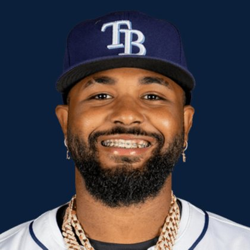

BASE KEEP
The Keep · The Diamond
Player File · 3B TB

Junior Caminero
#13 · 3B · Tampa Bay Rays · age 22 · B/T RR · 6' 1" / 220 lbs · MLB debut 2023 · Santo Domingo, Dominican Republic
Keep avg3.09
# Boards23
BK Value12,000
Spread1–11
Hitting
| Year | G | AB | R | H | 2B | HR | RBI | SB | BB | SO | AVG | OBP | SLG | OPS |
|---|---|---|---|---|---|---|---|---|---|---|---|---|---|---|
| 2026 | 126 | 481 | 78 | 132 | 19 | 35 | 80 | 3 | 66 | 103 | .274 | .363 | .536 | .899 |
| 2025 | 154 | 602 | 93 | 159 | 28 | 45 | 110 | 7 | 41 | 125 | .264 | .311 | .535 | .846 |
The Keep#1BK 12,000
The Lineup#1BK 12,000
The Diamond#3BK 10,228
The 2026 line
Keep #1 · avg 3.09 · 23 boards · .274 / 35 HR / 3 SB / .899 OPS
Baseball Savant
Starcast · spray · pitch
Percentile ranks (Starcast) plus the official Savant spray chart for bats and pitch chart for arms. Open the full Baseball Savant page.
Batter · 2026
xwOBA
91
xBA
79
xSLG
93
xISO
91
xOBP
87
Barrels
98
Barrel %
88
EV
96
Max EV
99
Hard Hit %
92
K %
63
BB %
84
Whiff %
45
Chase %
53
Speed
27
Arm
62
OAA
1
Bat Speed
100
Squared Up
31
Swing Len
100
Hits spray chart
Board graph
Spread 1–11 · 23 sources
Every Board
Spread 1–11 · 23 sources
| Source | Rank |
|---|---|
| RotoGraphs Model | 1 |
| Razzball | 1 |
| RotoWire | 1 |
| Baseball Prospectus | 1 |
| The Dynasty Dugout | 1 |
| FanGraphs The Board | 1 |
| Baseball America | 1 |
| MLB Pipeline mix | 1 |
| Enos Slaughter | 1 |
| CBS Sports | 2 |
| Ottoneu | 2 |
| The Athletic | 2 |
| ESPN | 3 |
| NFBC ADP | 3 |
| Mastersball | 3 |
| Yahoo Fantasy | 3 |
| ATC ROS | 3 |
| Fantasy Baseballers | 4 |
| Four-Seam Fantasy | 5 |
| FantasyPros Dynasty ECR | 6 |
| Dynasty League Baseball | 6 |
| Pitcher List | 9 |
| TDG Points | 11 |
BK News
- Today's Best MLB Home Run Prop Bets: Top 5 Predictions ft. Matt Olson, Pete Crow-Armstrong | August 28, 2026
- Today's Best MLB Home Run Prop Bets: Top 5 Predictions ft. Junior Caminero, Eugenio Suarez | August 20, 2026
- MLB Home Run Props & Predictions Today: Best HR Picks & Parlay for Aug. 28
All players · The Keep · The Diamond · BK News · The Lineup · Pitchers · Calculator